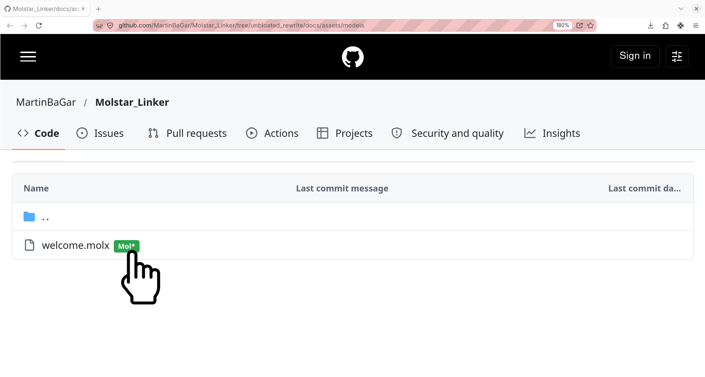
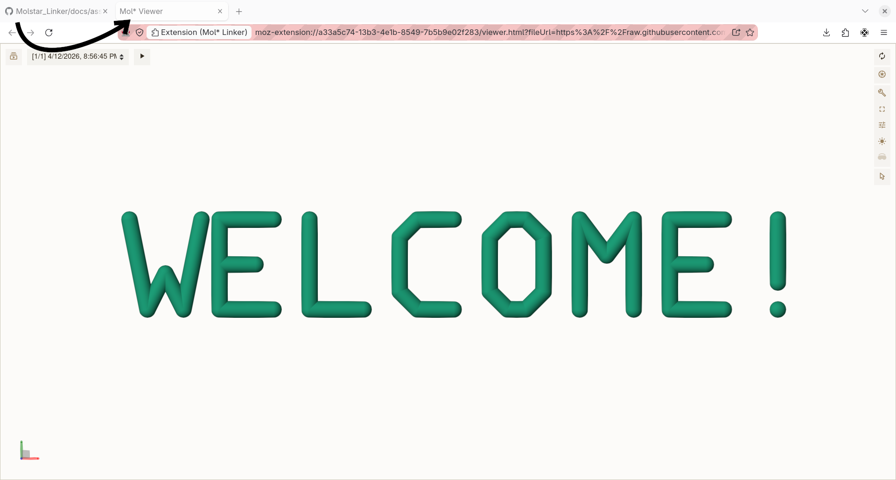
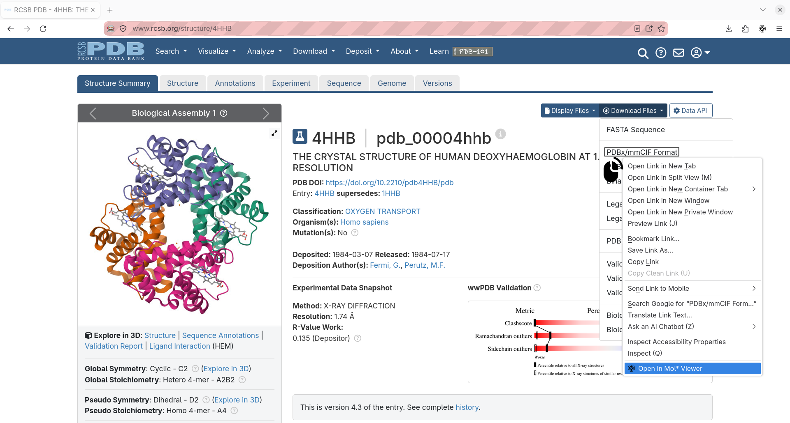

Opening a Structure
There are two ways to visualize your file with Mol* Linker:
- The Badges. Adds a badge next to your files. Works out-of-the-box on the websites supported by default. It can be extended to other websites and instances by granting permission access.
- The Context Menu. It doesn't require permission access but requires the user to know which link on the page leads the data.
Badges
- Spot a molecular structure file (e.g., .pdb, .cif) on a supported site. A green Mol* badge appears next to the file link or download button.
Click the badge.

The file opens in the Mol* web viewer in a new tab.

The badge appears automatically, no configuration required.
Context menu
- Spot a molecular structure file (e.g.,
.pdb,.cif) on a supported site. Righ-click on the link to download the file. The context menu should appear.

- Click on "Open in Mol* Viewer" to visualize your file in a new tab.